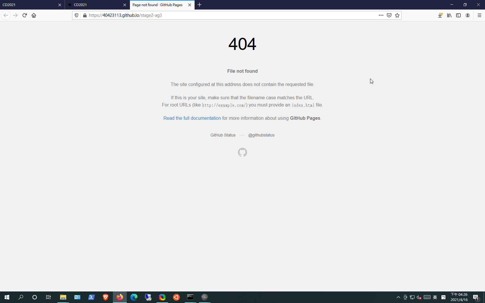
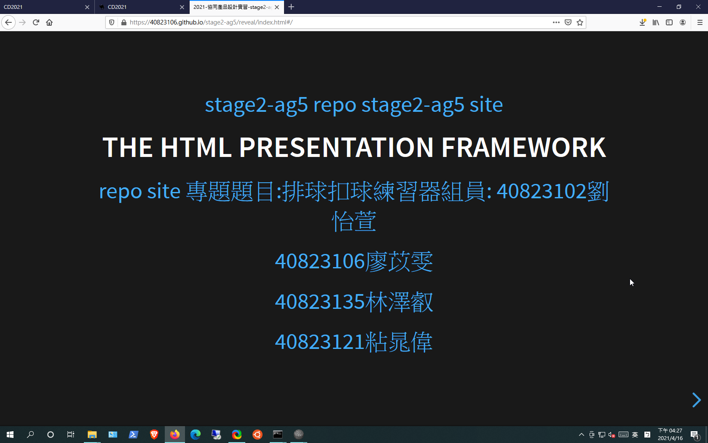
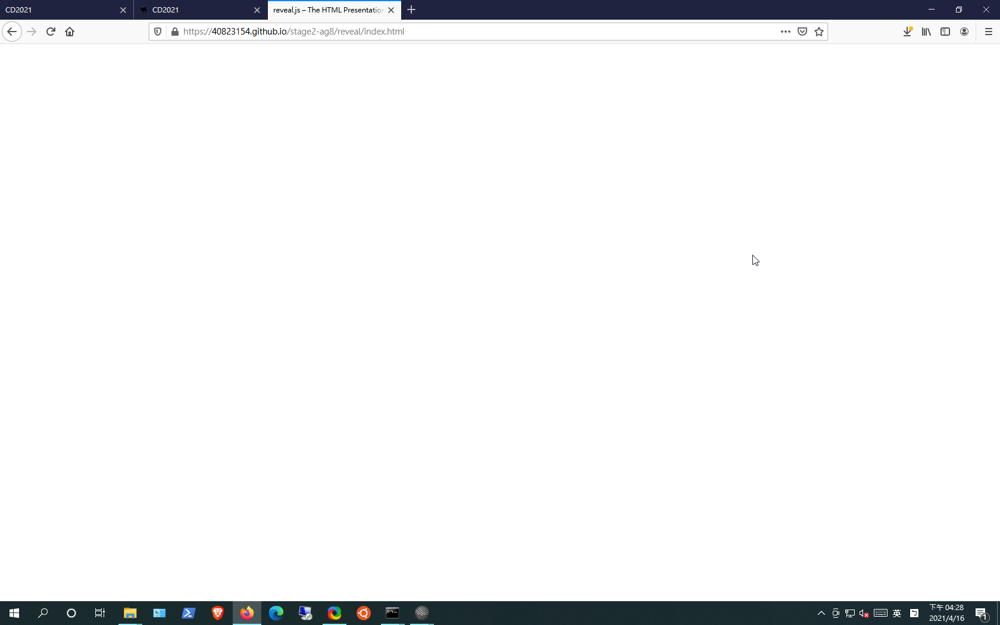
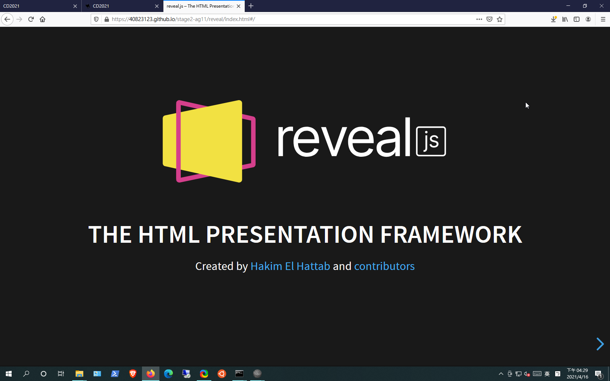
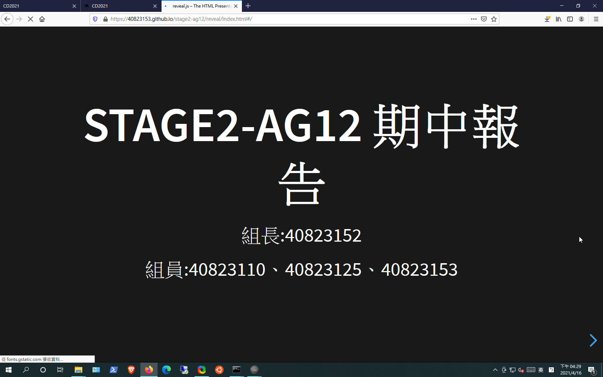
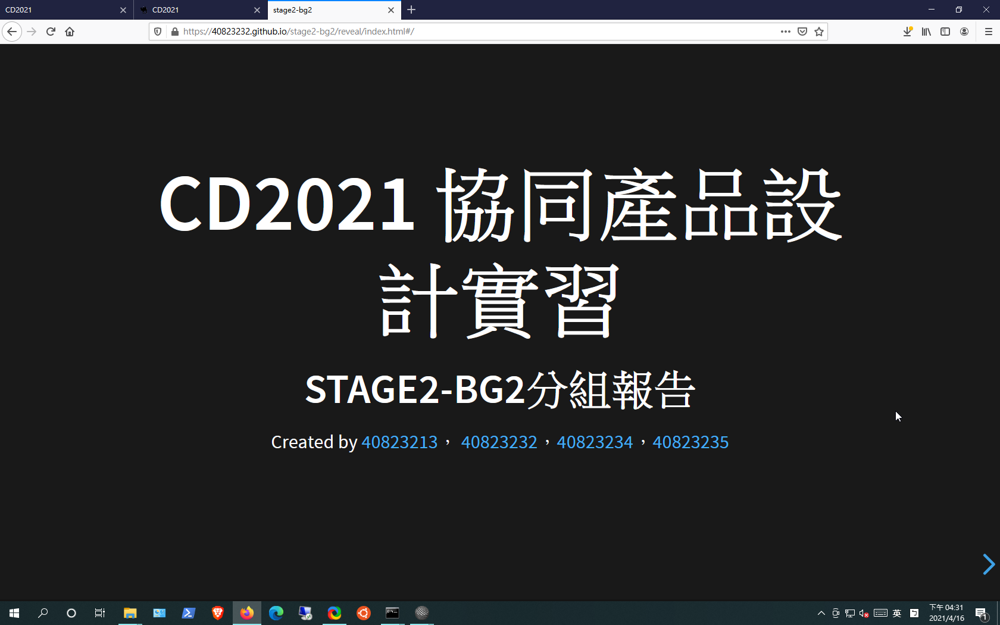
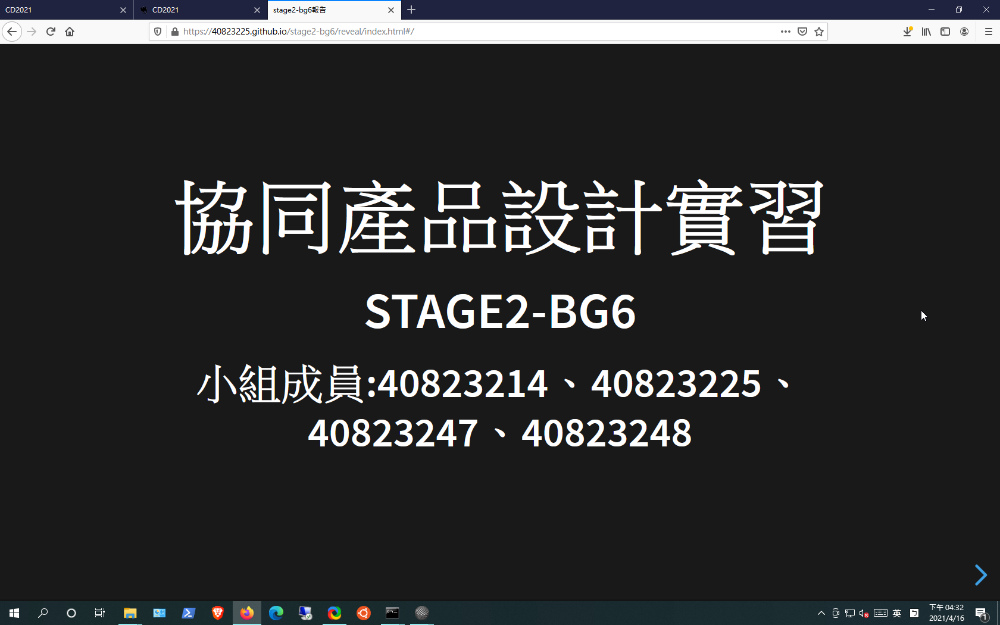
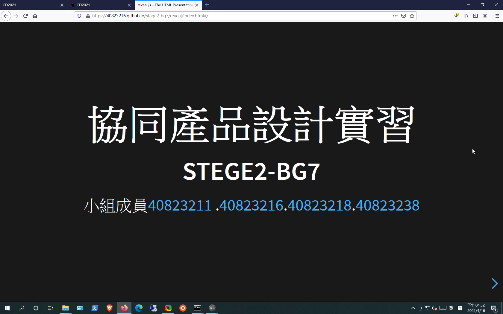
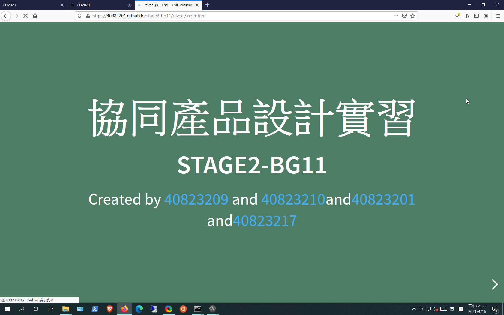
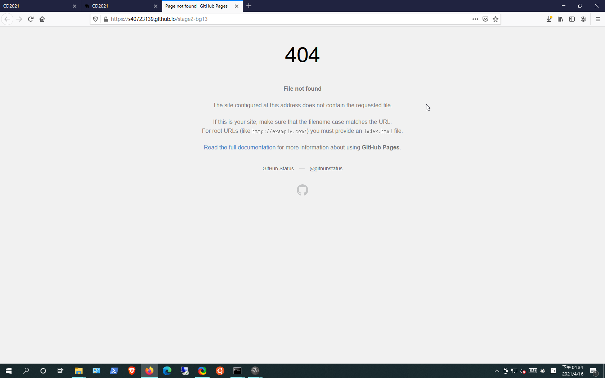

W6-W7 <<
Previous Next >> W9
W8 查驗
僅檢視各分組網頁的 reveal 簡報封面, 查驗各組在第八週的準備實況:
stage2-ag1 (W9 Wed. 10:56 查驗, 仍無網際簡報):
stage2-ag2 (W9 Wed. 10:57 查驗, 網際簡報已經完成):
stage2-ag3 (W9 Wed. 10:58 查驗, 仍為 404):

stage2-ag4 (W9 Wed. 10:59 查驗, 仍無網際簡報):
stage2-ag5 (W9 Wed. 11:00 查驗, 僅有網際簡報封面):

stage2-ag6 (W9 Wed. 11:01 查驗, 網際簡報已經完成):
stage2-ag7 (W9 Wed. 11:05 查驗, 無網際簡報):
stage2-ag8 (W9 Wed. 11:04 查驗, 網際簡報僅有部分頁面):

stage2-ag9 (W9 Wed. 11:07 查驗, 有網際簡報, 但無結論):
stage2-ag10 (W9 Wed. 11:09 查驗, 有網際簡報, 但無結論):
stage2-ag11 (W9 Wed. 11:18 查驗, 有網際簡報, 但仍無結論):

stage2-ag12 (W9 Wed. 11:11 查驗, 網際簡報畫面無法辨識內容):

stage2-bg1 (W9 Wed. 11:23 查驗, 有部分網際簡報內容):
stage2-bg2 (W9 Wed. 11:27 查驗, 有網際簡報, 無具體內容):

stage2-bg3 (W9 Wed. 11:24 查驗, 無網際簡報):
stage2-bg4 (W9 Wed. 11:28 查驗, 仍為 404):
stage2-bg5 (W9 Wed. 11:29 查驗, 仍無網際簡報):
stage2-bg6 (W9 Wed. 11:30 查驗, 有網際簡報但無具體結果):

stage2-bg7 (W9 Wed. 11:31 查驗, 有網際簡報, 模擬結果未放入簡報):

stage2-bg8 (W9 Wed. 11:34 查驗, 仍無網際簡報):
stage2-bg9 (W9 Wed. 11:34 查驗, 仍無網際簡報):
stage2-bg10 (W9 Wed. 11:35 查驗, 仍無網際簡報):
stage2-bg11 (W9 Wed. 11:39 查驗, 已經完成網際簡報):

stage2-bg12 (W9 Wed. 11:36 查驗, 仍無網際簡報:

stage2-bg13 (W9 Wed. 11:37 查驗, 仍為 404):

stage2-bg14 (W9 Wed. 11:40 查驗, 完成部分網際簡報):
產生連結的 Python 程式:
part1 = '''<p><img src="./../images/cd2021_2b_stage2_bg'''
part2 = '''.png" alt="" width="300" height="188"></p>'''
for i in range(1, 15):
print("<p>stage2-bg" + str(i) + ":</p>" + part1 + str(i) + part2 + "")
W6-W7 <<
Previous Next >> W9